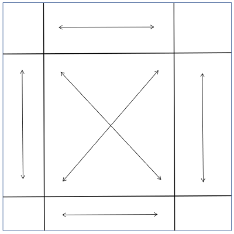
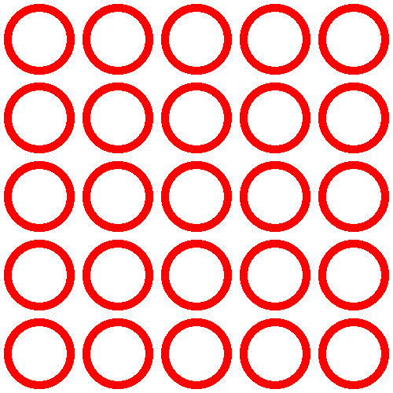

Segmented display of SkiaSharp bitmaps
The SkiaSharp SKCanvas object defines a method named DrawBitmapNinePatch and two methods named DrawBitmapLattice that are very similar. Both these methods render a bitmap to the size of a destination rectangle, but instead of stretching the bitmap uniformly, they display portions of the bitmap in its pixel dimensions and stretch other parts of the bitmap so that it fits the rectangle:

These methods are generally used for rendering bitmaps that form part of user-interface objects such as buttons. When designing a button, generally you want the size of a button to be based on the content of the button, but you probably want the button's border to be the same width regardless of the button's content. That's an ideal application of DrawBitmapNinePatch.
DrawBitmapNinePatch is a special case of DrawBitmapLattice but it is the easier of the two methods to use and understand.
The nine-patch display
Conceptually, DrawBitmapNinePatch divides a bitmap into nine rectangles:

The rectangles at the four corners are displayed in their pixel sizes. As the arrows indicate, the other areas on the edges of the bitmap are stretched horizontally or vertically to the area of the destination rectangle. The rectangle in the center is stretched both horizontally and vertically.
If there is not enough space in the destination rectangle to display even the four corners in their pixel dimensions, then they are scaled down to the available size and nothing but the four corners are displayed.
To divide a bitmap into these nine rectangles, it is only necessary to specify the rectangle in the center. This is the syntax of the DrawBitmapNinePatch method:
canvas.DrawBitmapNinePatch(bitmap, centerRectangle, destRectangle, paint);
The center rectangle is relative to the bitmap. It is an SKRectI value (the integer version of SKRect) and all the coordinates and sizes are in units of pixels. The destination rectangle is relative to the display surface. The paint argument is optional.
The Nine Patch Display page in the sample first uses a static constructor to create a public static property of type SKBitmap:
public partial class NinePatchDisplayPage : ContentPage
{
static NinePatchDisplayPage()
{
using (SKCanvas canvas = new SKCanvas(FiveByFiveBitmap))
using (SKPaint paint = new SKPaint
{
Style = SKPaintStyle.Stroke,
Color = SKColors.Red,
StrokeWidth = 10
})
{
for (int x = 50; x < 500; x += 100)
for (int y = 50; y < 500; y += 100)
{
canvas.DrawCircle(x, y, 40, paint);
}
}
}
public static SKBitmap FiveByFiveBitmap { get; } = new SKBitmap(500, 500);
···
}
Two other pages in this article use that same bitmap. The bitmap is 500 pixels square, and consists of an array of 25 circles, all the same size, each occupying a 100-pixel square area:

The program's instance constructor creates an SKCanvasView with a PaintSurface handler that uses DrawBitmapNinePatch to display the bitmap stretched to its entire display surface:
public class NinePatchDisplayPage : ContentPage
{
···
public NinePatchDisplayPage()
{
Title = "Nine-Patch Display";
SKCanvasView canvasView = new SKCanvasView();
canvasView.PaintSurface += OnCanvasViewPaintSurface;
Content = canvasView;
}
void OnCanvasViewPaintSurface(object sender, SKPaintSurfaceEventArgs args)
{
SKImageInfo info = args.Info;
SKSurface surface = args.Surface;
SKCanvas canvas = surface.Canvas;
canvas.Clear();
SKRectI centerRect = new SKRectI(100, 100, 400, 400);
canvas.DrawBitmapNinePatch(FiveByFiveBitmap, centerRect, info.Rect);
}
}
The centerRect rectangle encompasses the central array of 16 circles. The circles in the corners are displayed in their pixel dimensions, and everything else is stretched accordingly:
{kind=link}
The UWP page happens to be 500 pixels wide, and hence displays the top and bottom rows as a series of circles of the same size. Otherwise, all the circles that are not in the corners are stretched to form ellipses.
For a strange display of objects consisting of a combination of circles and ellipses, try defining the center rectangle so that it overlaps rows and columns of circles:
SKRectI centerRect = new SKRectI(150, 150, 350, 350);
The lattice display
The two DrawBitmapLattice methods are similar to DrawBitmapNinePatch, but they are generalized for any number of horizontal or vertical divisions. These divisions are defined by arrays of integers corresponding to pixels.
The DrawBitmapLattice method with parameters for these arrays of integers does not seem to work. The DrawBitmapLattice method with a parameter of type SKLattice does work, and that's the one used in the samples shown below.
The SKLattice structure defines four properties:
XDivs, an array of integersYDivs, an array of integersFlags, an array ofSKLatticeFlags, an enumeration typeBoundsof typeNullable<SKRectI>to specify an optional source rectangle within the bitmap
The XDivs array divides the width of the bitmap into vertical strips. The first strip extends from pixel 0 at the left to XDivs[0]. This strip is rendered in its pixel width. The second strip extends from XDivs[0] to XDivs[1], and is stretched. The third strip extends from XDivs[1] to XDivs[2] and is rendered in its pixel width. The last strip extends from the last element of the array to the right edge of the bitmap. If the array has an even number of elements, then it's displayed in its pixel width. Otherwise, it's stretched. The total number of vertical strips is one more than the number of elements in the array.
The YDivs array is similar. It divides the height of the array into horizontal strips.
Together, the XDivs and YDivs array divide the bitmap into rectangles. The number of rectangles is equal to the product of the number of horizontal strips and the number of vertical strips.
According to Skia documentation, the Flags array contains one element for each rectangle, first the top row of rectangles, then the second row, and so forth. The Flags array is of type SKLatticeFlags, an enumeration with the following members:
Defaultwith value 0Transparentwith value 1
However, these flags don't seem to work as they are supposed to, and it's best to ignore them. But don't set the Flags property to null. Set it to an array of SKLatticeFlags values large enough to encompass the total number of rectangles.
The Lattice Nine Patch page uses DrawBitmapLattice to mimic DrawBitmapNinePatch. It uses the same bitmap created in NinePatchDisplayPage:
public class LatticeNinePatchPage : ContentPage
{
SKBitmap bitmap = NinePatchDisplayPage.FiveByFiveBitmap;
public LatticeNinePatchPage ()
{
Title = "Lattice Nine-Patch";
SKCanvasView canvasView = new SKCanvasView();
canvasView.PaintSurface += OnCanvasViewPaintSurface;
Content = canvasView;
}
`
void OnCanvasViewPaintSurface(object sender, SKPaintSurfaceEventArgs args)
{
SKImageInfo info = args.Info;
SKSurface surface = args.Surface;
SKCanvas canvas = surface.Canvas;
SKLattice lattice = new SKLattice();
lattice.XDivs = new int[] { 100, 400 };
lattice.YDivs = new int[] { 100, 400 };
lattice.Flags = new SKLatticeFlags[9];
canvas.DrawBitmapLattice(bitmap, lattice, info.Rect);
}
}
Both the XDivs and YDivs properties are set to arrays of just two integers, dividing the bitmap into three strips both horizontally and vertically: from pixel 0 to pixel 100 (rendered in the pixel size), from pixel 100 to pixel 400 (stretched), and from pixel 400 to pixel 500 (pixel size). Together, XDivs and YDivs define a total of 9 rectangles, which is the size of the Flags array. Simply creating the array is sufficient to create an array of SKLatticeFlags.Default values.
The display is identical to the previous program:

The Lattice Display page divides the bitmap into 16 rectangles:
public class LatticeDisplayPage : ContentPage
{
SKBitmap bitmap = NinePatchDisplayPage.FiveByFiveBitmap;
public LatticeDisplayPage()
{
Title = "Lattice Display";
SKCanvasView canvasView = new SKCanvasView();
canvasView.PaintSurface += OnCanvasViewPaintSurface;
Content = canvasView;
}
void OnCanvasViewPaintSurface(object sender, SKPaintSurfaceEventArgs args)
{
SKImageInfo info = args.Info;
SKSurface surface = args.Surface;
SKCanvas canvas = surface.Canvas;
canvas.Clear();
SKLattice lattice = new SKLattice();
lattice.XDivs = new int[] { 100, 200, 400 };
lattice.YDivs = new int[] { 100, 300, 400 };
int count = (lattice.XDivs.Length + 1) * (lattice.YDivs.Length + 1);
lattice.Flags = new SKLatticeFlags[count];
canvas.DrawBitmapLattice(bitmap, lattice, info.Rect);
}
}
The XDivs and YDivs arrays are somewhat different, causing the display to be not quite as symmetrical as the previous examples:

In the iOS and Android images on the left, only the smaller circles are rendered in their pixel sizes. Everything else is stretched.
The Lattice Display page generalizes the creation of the Flags array, allowing you to experiment with XDivs and YDivs more easily. In particular, you'll want to see what happens when you set the first element of the XDivs or YDivs array to 0.